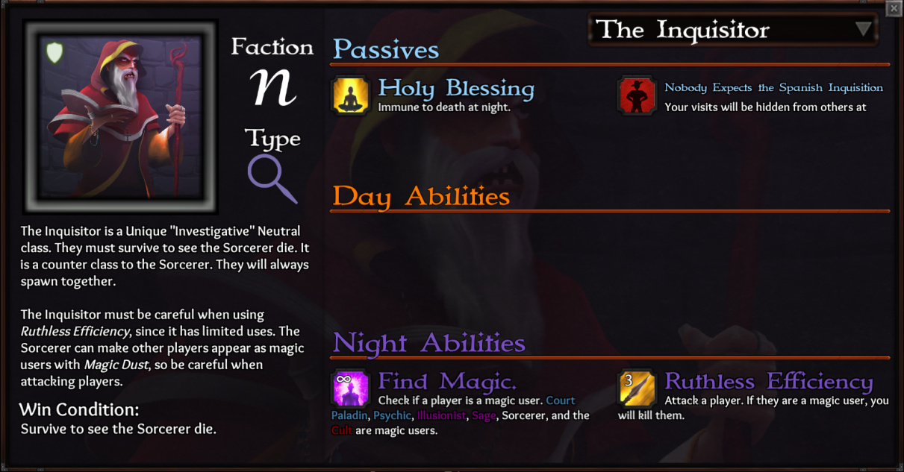
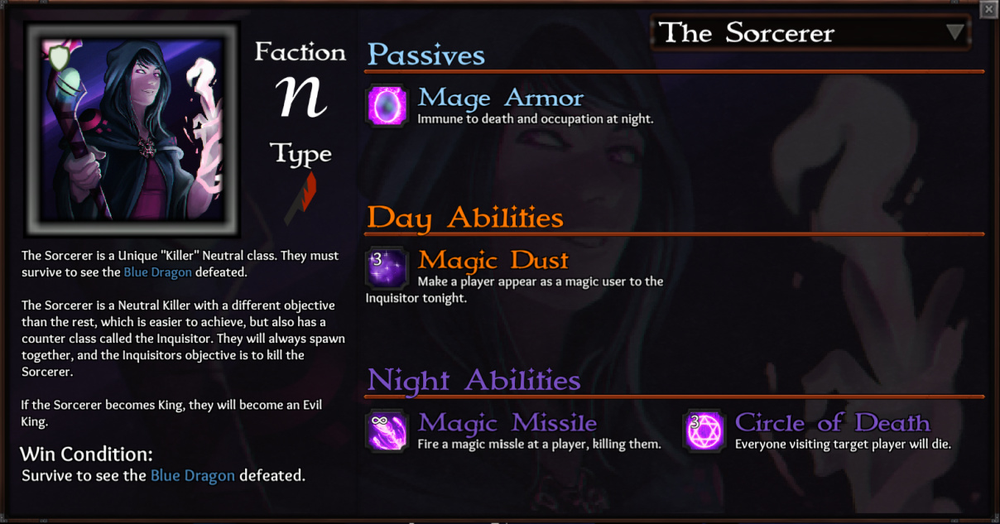

My initial thoughts are: sweeeeet.
Very happy they made the Inquisitor basically unconfirmable so he cannot claim to BD and expect to survive the entire game. The Inquisitor can almost be a 2nd Neutral Killer in the game by himself.
I’ve always wondered where that splash art of the Sorcerer was going to go. Now we know.
So we have an investigative Executioner and a neutral killer who can win with Unseen or Cult.
Verrry excited to see these in action